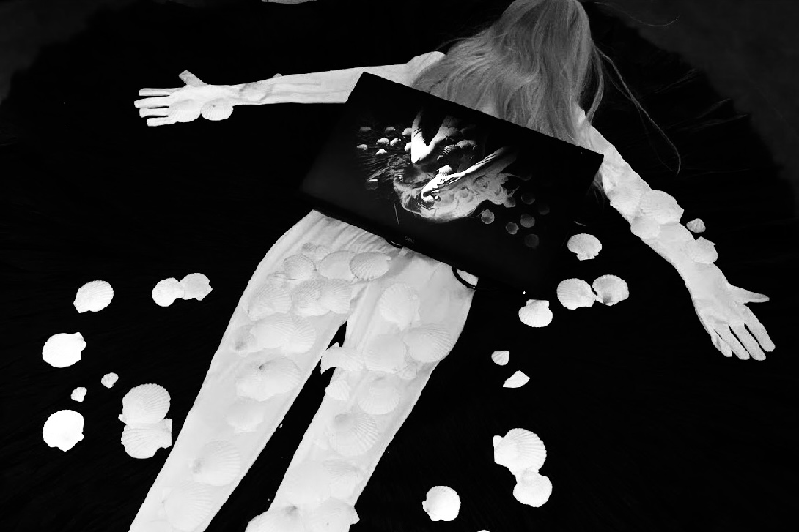
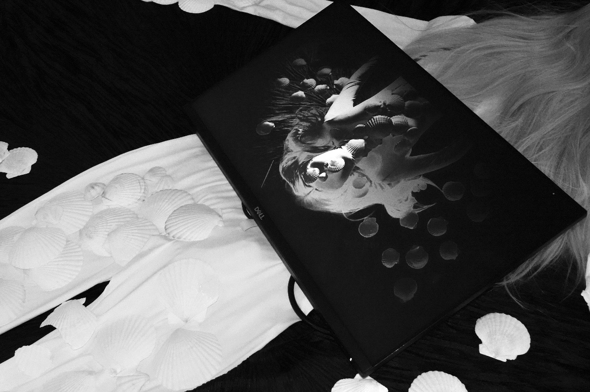
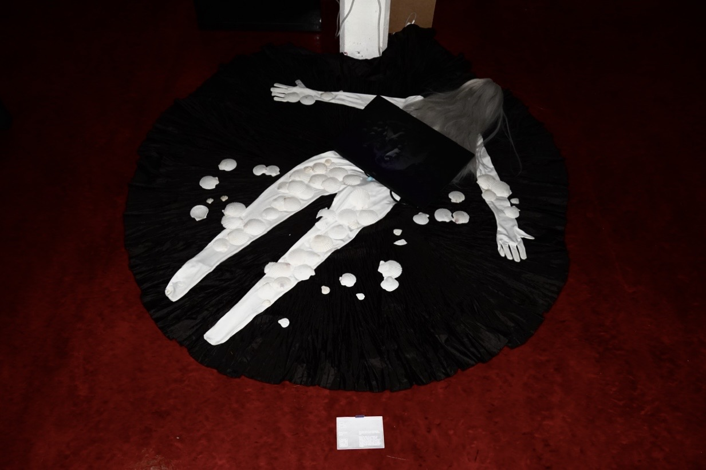

The Shell
This work serves as an experimental prototype for a larger video installation. Using the shell as a metaphor for shelter and boundaries, the work explores how individuals seek security in response to anxiety. By examining the dual nature of the shell as both protection and restriction, it reflects on the tension between belonging and freedom.
Qianwen Ji
Ji Qianwen is a multidisciplinary artist currently studying Fine Art in the United Kingdom. Her practice explores themes of embodiment, attachment, protection, and the boundaries that shape human experience. Through installation, sculpture, video, and interactive media, she investigates the tension between safety and restriction, examining how structures designed to provide comfort can also become mechanisms of control. Drawing from personal memories, migration experiences, and observations of social relationships, her work seeks to reveal the complex interplay between vulnerability, identity, and the desire for belonging.